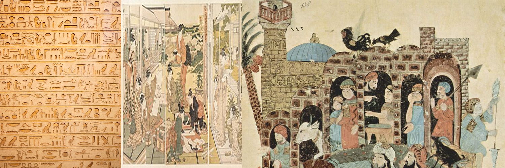

About Us
The Yosi Tosi Research Group is dedicated to uncovering and preserving the rich historical and religious narratives of Asia and the Middle East. Our team delves into the spiritual and cultural traditions that have defined these regions, providing accurate, in-depth research to illuminate their enduring legacies.
Our Focus
We concentrate on a wide array of topics, including but not limited to:
- Ancient trade routes and their impact on cultural and religious exchange
- Historical urbanization, architectural achievements, and their religious significance
- Documenting oral traditions and sacred texts to preserve spiritual diversity
- Investigating key historical and religious figures and their legacies
Our Mission
Our mission is to connect the past with the present, fostering a deeper understanding of history and religion's role in shaping contemporary society. Through meticulous research and collaboration, we strive to bring forgotten stories and spiritual traditions to life, making them accessible to everyone.
Get Involved
If you're passionate about history and religion and want to contribute to our work, we'd love to hear from you. Whether you're an academic, a student, or simply someone interested in these fields, there are many ways to get involved.
Our work